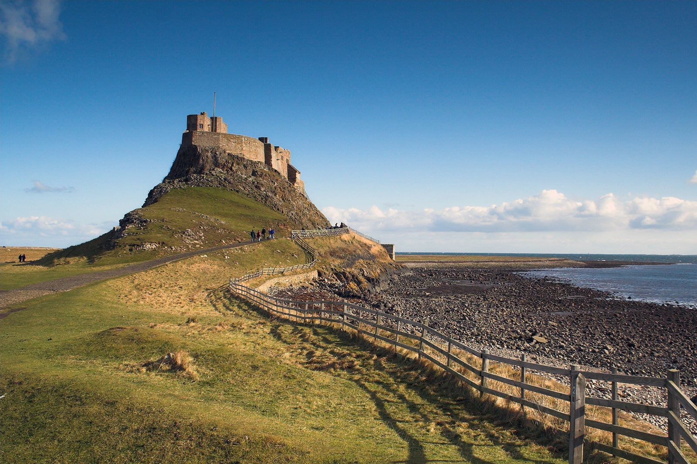
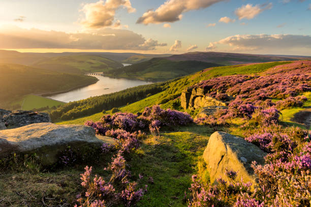
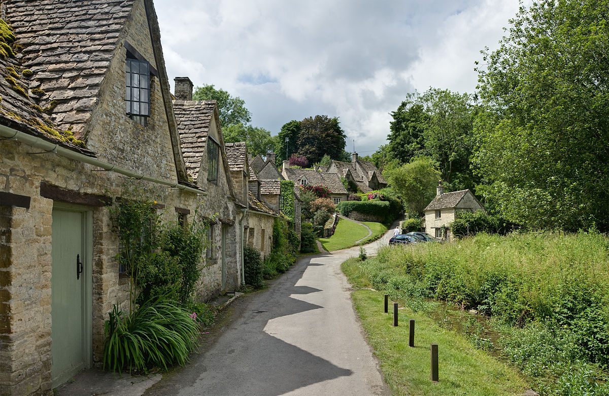
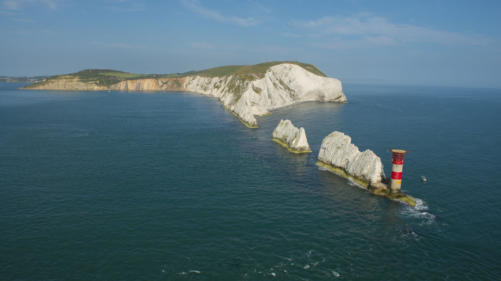
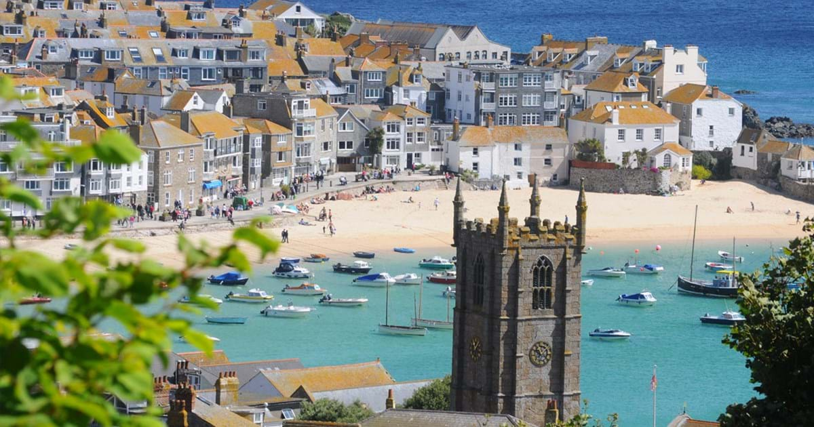

Day 1 & 2

On this day you will start enjoying the freedom by taking your first step in the hot air balloon.
You get on in Northumberland and from there you fly to Yorkshire where you can walk around the beautiful nature parks the next day
Day 3 & 4

Today you will take a short flight to the Peak District National Park where you will spend the entire afternoon exploring the park.
In the evening you will go back in the hot air balloon to fly to Norfolk at night. When you wake up you are flying just above Norfolk
where you fly back and forth between the beautiful nature parks and villages for the rest of the day. Tonight you fly to the Cotswolds.
Day 5 & 6

Today you wake up above the Cotswolds, a very beautiful nature park full of birdlife. When you have landed you will visit nice bird parks that day.
Before the sun goes down you fly to London where you can see a beautiful skyline just before the sun goes down completely.
Day 7 & 8

On this day you go to the Isle of Wight to enjoy the meadows and the beach.
After a quiet day of enjoyment you can go to Wiltshire where you can visit the Stone Henge and the very beautiful and historic city.
Day 9 & 10

These last days you first go to Cornwall for a day where you can take it easy and rest from the previous days.
On the last day you will be in the hot air balloon all day to fly back to your departure point.
.